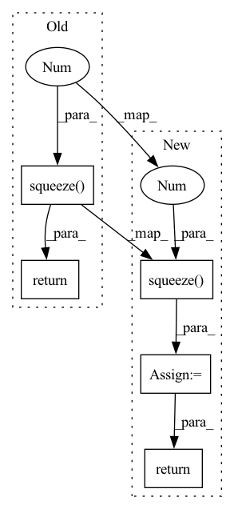

Pattern ID :38162
Before Change
// logits = self.model(images).squeeze(1)
// loss = F.binary_cross_entropy_with_logits(logits, labels)
// return logits, loss
return self.model(images).squeeze(1 )
def training_step(self, batch: dict[str, torch.Tensor], idx: int) -> torch.Tensor:
// logits, loss = self(**batch)
logits = self(**batch)After Change
// labels = lam * labels + (1 - lam) * labels.flip(0)
images = images + 0.1 * torch.randn_like(images[:1])
logits = self.model(images).squeeze(1 )
loss = F.binary_cross_entropy_with_logits(logits, labels)
return logits, loss
def training_step(self, batch: dict[str, torch.Tensor], idx: int) -> torch.Tensor:
logits, loss = self(**batch)In pattern: SUPERPATTERN
Frequency: 6
Non-data size: 5
Instances Fragment ID: 109382305
Project Name: affjljoo3581/g2net-detecting-continuous-gravitational-waves
Commit Name: 075688fe575d3e91ea324ea0c0a25f6197ea29b9
Time: 2023-01-01
Author: affjljoo3581@gmail.com
File Name: src/lightning.py
M Class Name: G2NetLightningModule
N Class Name: G2NetLightningModule
M Method Name: forward(3)
N Method Name: forward(3)
M Parent Class: LightningModule
N Parent Class: LightningModule
M File Name: src/lightning.py
N File Name: src/lightning.py
M Start Line: 41
M End Line: 41
N Start Line: 31
N End Line: 39
Before Change
conv = self.conv(observation)
flatten = conv.view(time, batch, -1) // (T*B, C", H", W") -> (T, B, C" * H" * W")
f = self.fe(flatten)
return self.policy(f), self.value(f).squeeze(-1 )
class ModelMLP(nn.Module):
// predicts p(s"|s, a)After Change
policy = torch.cat((mean, log_std), -1)
else:
policy = self.policy(f)
value = self.value(f).squeeze(-1 )
return policy, value
class ModelMLP(nn.Module): Fragment ID: 109382304
Project Name: cherrypiesexy/imitation_learning
Commit Name: de8df8c52d0817134283e2418c570f59e81910fc
Time: 2020-07-01
Author: dmitry.akimov@giant.ai
File Name: algorithms/nn.py
M Class Name: ActorCriticAtari
N Class Name: ActorCriticAtari
M Method Name: forward(2)
N Method Name: forward(2)
M Parent Class: nn.Module
N Parent Class: nn.Module
M File Name: algorithms/nn.py
N File Name: algorithms/nn.py
M Start Line: 99
M End Line: 100
N Start Line: 94
N End Line: 102
Before Change
gc = min(group_channels or n, n)
cc, g = c // channels, n // gc
y = x.view(gc, g, channels, cc, h, w)
return torch.cat([x, y.std(0, False).mean([2, 3, 4], True).squeeze(-1 ) .repeat(gc, 1, h, w)], 1)
After Change
gc = min(group_channels or n, n)
cc, g = c // channels, n // gc
y = x.view(gc, g, channels, cc, h, w)
y = y.var(0, False).add(epsilon).sqrt().mean([2, 3, 4], True).squeeze(-1 ) .repeat(gc, 1, h, w)
return torch.cat([x, y], 1)
Fragment ID: 109382301
Project Name: fzj-inm1-bda/celldetection
Commit Name: 954f3615e1930a39ee73325a349babae76b2af36
Time: 2022-04-02
Author: eric@upschulte.com
File Name: celldetection/ops/commons.py
M Class Name: AnonimousClass
N Class Name: AnonimousClass
M Method Name: minibatch_std_layer(4)
N Method Name: minibatch_std_layer(3)
M Parent Class:
N Parent Class:
M File Name: celldetection/ops/commons.py
N File Name: celldetection/ops/commons.py
M Start Line: 97
M End Line: 100
N Start Line: 77
N End Line: 102
Before Change
self.batch_first = batch_first
def interpolate(self, x):
return F.interpolate(x.unsqueeze(1), self.output_size, mode="linear", align_corners=True).squeeze(1 )
def forward(self, x):
if len(x.size()) <= 2:After Change
self.softmax = nn.Softmax(dim=-1)
def interpolate(self, x):
upsampled = F.interpolate(x.unsqueeze(1), self.output_size, mode="linear", align_corners=True).squeeze(1 )
if self.trainable:
upsampled = upsampled * self.softmax(self.soft_mask).unsqueeze(0) * self.output_size
return upsampled
def forward(self, x):
Fragment ID: 109382300
Project Name: jdb78/pytorch-forecasting
Commit Name: 9793000c05fbe1c054f29b71cd135d44238e4026
Time: 2020-07-16
Author: beitner.jan@bcg.com
File Name: pytorch_forecasting/models/temporal_fusion_transformer/sub_modules.py
M Class Name: TimeDistributedInterpolation
N Class Name: TimeDistributedInterpolation
M Method Name: interpolate(2)
N Method Name: interpolate(2)
M Parent Class: nn.Module
N Parent Class: nn.Module
M File Name: pytorch_forecasting/models/temporal_fusion_transformer/sub_modules.py
N File Name: pytorch_forecasting/models/temporal_fusion_transformer/sub_modules.py
M Start Line: 17
M End Line: 17
N Start Line: 21
N End Line: 24
Before Change
tensor([1., 0., 0., 0., 0.])
return torch.eye(n=1, m=order + 1, **kwargs).squeeze(0 )
def step(order, value=1, **kwargs):
Generate step sequence.After Change
tensor([1., 0., 0., 0., 0.])
x = torch.eye(n=1, m=order + 1, **kwargs).squeeze(0 )
return x
def step(order, value=1, **kwargs): Fragment ID: 109382303
Project Name: sp-nitech/diffsptk
Commit Name: c194871d794fe1e98b73b413a0b82173c2d103f1
Time: 2022-11-29
Author: takenori.yoshimura24@gmail.com
File Name: diffsptk/misc/signals.py
M Class Name: AnonimousClass
N Class Name: AnonimousClass
M Method Name: impulse(1)
N Method Name: impulse(1)
M Parent Class:
N Parent Class:
M File Name: diffsptk/misc/signals.py
N File Name: diffsptk/misc/signals.py
M Start Line: 45
M End Line: 45
N Start Line: 45
N End Line: 46
Before Change
resampled_waveform = self._perform_resample(waveforms)
// Remove unnecessary channels dimension
return resampled_waveform.squeeze(1 )
def _perform_resample(self, waveforms):
Resamples the waveform at the new frequency.
After Change
resampled_waveform = self._perform_resample(waveforms)
if unsqueezed:
resampled_waveform = resampled_waveform.squeeze(1 )
else:
resampled_waveform = waveforms.transpose(1, 2)
return resampled_waveform
def _perform_resample(self, waveforms):
Resamples the waveform at the new frequency. Fragment ID: 109382299
Project Name: speechbrain/speechbrain
Commit Name: f0580b11b02b49bbde7f90f8a4a54fd4a0fac643
Time: 2020-04-27
Author: plantinga.peter@gmail.com
File Name: speechbrain/processing/speech_augmentation.py
M Class Name: Resample
N Class Name: Resample
M Method Name: forward(2)
N Method Name: forward(2)
M Parent Class: torch.nn.Module
N Parent Class: torch.nn.Module
M File Name: speechbrain/processing/speech_augmentation.py
N File Name: speechbrain/processing/speech_augmentation.py
M Start Line: 509
M End Line: 509
N Start Line: 496
N End Line: 513